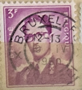
| SOURCE | TITLE| IMAGE MATCH | click to source page |
| HipStamp | Belgium 455: 3f King Baudouin, used, VF | Europe - Belgium & Colonies, General Issue Stamp / HipStamp | 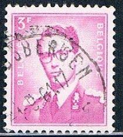 |
| Alamy | Postage stamp from Belgium in the King Baudouin series Stock Photo - Alamy | 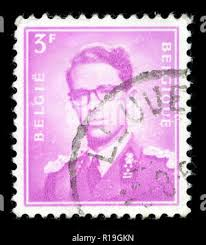 |
| eBay | BELGIUM 455p - King Baudouin "1965 Phosphorous" (pf64866) | eBay | 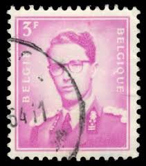 |
| eBay UK | Belgium 1958 King Baudouin 3f Fine Used SG 1457 Bruxelles Cancel VGC | eBay UK | 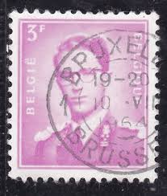 |
| Alamy | BELGIUM - CIRCA 1960: a stamp printed in Belgium shows Alexandrine de Rye, Countess of Taxis, was Grand Mistress of the Netherlands Post, painting by Stock Photo - Alamy | 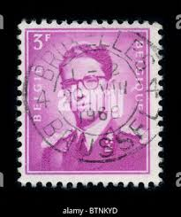 |
| Alamy | Baudouin of Belgium (1930-1993), King of the Belgians during 1951-1993. Portrait on a Belgian postage stamp Stock Photo - Alamy | 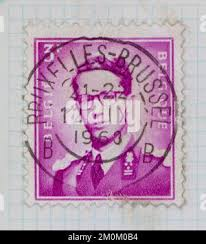 |
| HipStamp | Belgium #455 King Baudouin; Used | Europe - Belgium & Colonies, General Issue Stamp / HipStamp | 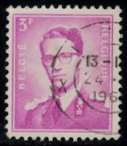 |
| Dreamstime.com | 10,607 Old King Portrait Stock Photos - Free & Royalty-Free Stock Photos from Dreamstime - Page 45 | 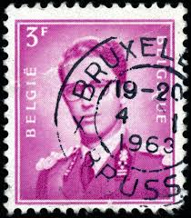 |
| Alamy | Postage stamp belgium hi-res stock photography and images - Page 5 - Alamy | 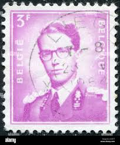 |
| Alamy | King baudouin of belgium hi-res stock photography and images - Alamy | 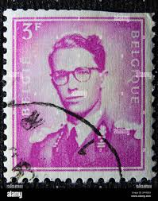 |
| ebid.net | Belgium stamps 1958 - 3f reddish purple - King Baudouin - used on eBid United Kingdom | 204460825 | 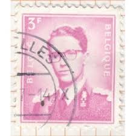 |
| alamyimages.fr | Timbres Belgique 1930 Photo Stock - Alamy | 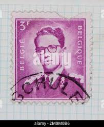 |
| Shutterstock | Belgium Circa 1958 Post Stamp Printed Stock Photo 1087321436 | Shutterstock | 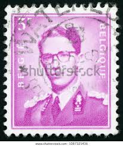 |
| HipStamp | Ozzy1 / HipStamp | 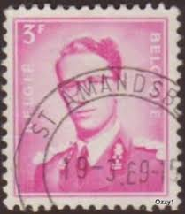 |
| eBay | Belgie Belgique Stamp for sale | eBay | 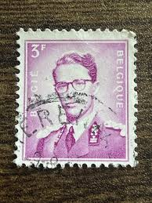 |
| Todocolección | belgica 1958 scott 455 usado - Buy Antique stamps of Belgium on todocoleccion | 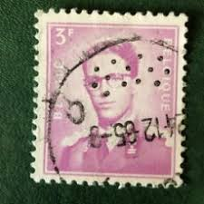 |
| HipStamp | Belgium 455: 3f King Baudouin, used, VF | Europe - Belgium & Colonies, General Issue Stamp / HipStamp | 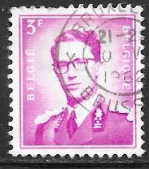 |
| Alamy | Belgium baudouin stamp king hi-res stock photography and images - Page 3 - Alamy | 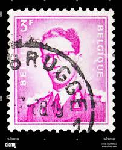 |
| HipStamp | Belgium 1958 Sc#455, SG#1457 3f Magenta King Baudouin USED-H. | Europe - Belgium & Colonies, General Issue Stamp / HipStamp | 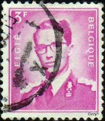 |
| eBay | Belgium - 1958 - King Baudouin - New value - 3Fr - #2128 | eBay | 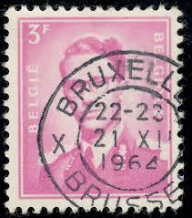 |
| eBay | BELGIUM Cancelled Stamps 267 Pieces KING BAUDOUIN - 1 PERF | eBay | 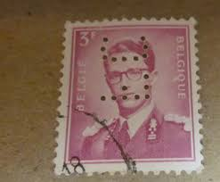 |
| Alamy | 1930 stamp hi-res stock photography and images - Page 2 - Alamy | 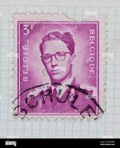 |
| Shutterstock | Postage Stamp Featuring Portrait King Baudouin Stock Photo 2715326151 | Shutterstock | 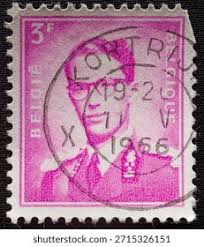 |
| eBay | Vintage Cover,1960,BRUSSELS, BELGIUM, AIRMAIL,To Liverpool, UK, Procter & Gamble | eBay | 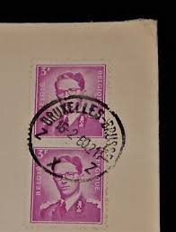 |
| Shutterstock | 19+ Thousand King Post Royalty-Free Images, Stock Photos & Pictures | Shutterstock | 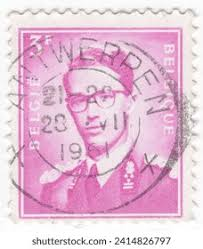 |
| eBay | Belgium - 1958 - 3Fr - King Baudouin - New values - #17823 | eBay | 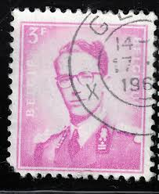 |
| Shutterstock | 1+ Thousand King Leopold I Royalty-Free Images, Stock Photos & Pictures | Shutterstock | 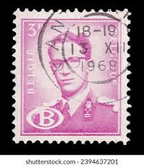 |
| eBay | Vintage- Belgium Stamp Belgie/Belique King Baudouin 3f - Red -rare | eBay | 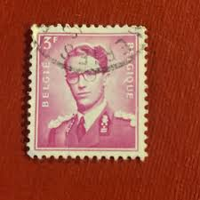 |
| Shutterstock | 7+ Thousand 1966. Print Royalty-Free Images, Stock Photos & Pictures | Shutterstock | 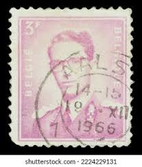 |
| HipStamp | Belgium 1953 3f King Baudouin Definitive used stamp ( H777 ) | Europe - Belgium & Colonies, Stamp / HipStamp | 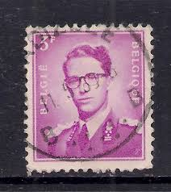 |
| Delcampe | Perfins - Belgium 1958-72 Perfins (o) Mi.1127 (A..P) | 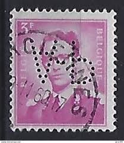 |
| eBay | Belgium 1939 old Orval III (high value) stamps (Michel 518/19) nice used | eBay | 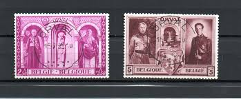 |
| HipStamp | Belgium # 365 - King Leopold III -1.50F ovpt.-10% - MH [BRN12] | Europe - Belgium & Colonies, General Issue Stamp / HipStamp | 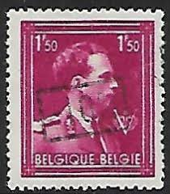 |
| m-brella.be | belgian stamps Issue Van Acker - 10% - local print. | 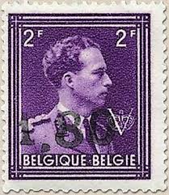 |
| Alamy | Leopold III was King of the Belgians from 1934 until 1951. On the outbreak of World War II, Leopold tried to maintain Belgian neutrality, but after the German invasion in May 1940, | 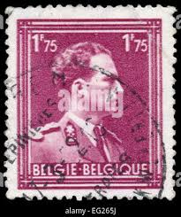 |
| 123RF | Belgium, 1953, Postage Stamp Of King Baudouin From Belgium Stock Photo, Picture and Royalty Free Image. Image 188077808. | 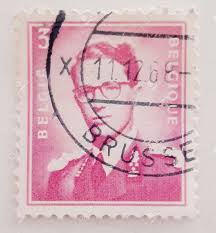 |
| belgianstamps.eu | belgian stamps Issue Van Acker - 10% - local print. | 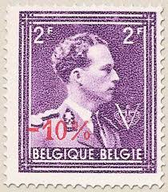 |
| HipStamp | Belgium #355 1.50fr King Leopold III | Europe - Belgium & Colonies, General Issue Stamp / HipStamp | 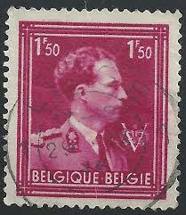 |
| HipStamp | Belgium #288 Used Single | Europe - Belgium & Colonies, General Issue Stamp / HipStamp | 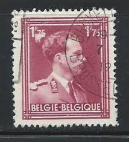 |
| iStock | Russian Postage Stamps Stock Photo - Download Image Now - Postage Stamp, Above, Antique - iStock | 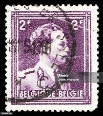 |
| HipStamp | Belgium 288: 1.75f Leopold III, used, VF | Europe - Belgium & Colonies, General Issue Stamp / HipStamp | 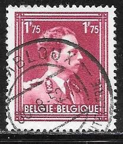 |
| PicClick UK | BELGIUM STAMP KING Baudouin Belgium-belgique Used 7F £0.99 - PicClick UK | 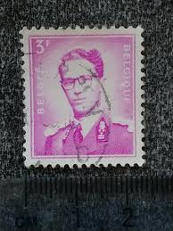 |
| eBay | Pink Bird Postal Stamps for sale | eBay | 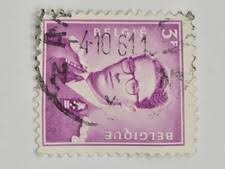 |
| eBay UK | 5 Number Postage Stamps for sale | eBay UK | 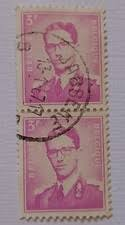 |
| Desertcart | Belgium 742 Unmounted Mint Never Hinged Mnh 1946 Van Acres | Desertcart INDIA | 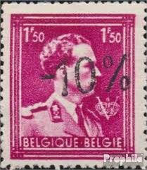 |
| Alamy | Belgium King Leopold III Portrait Vintage Postage Stamp Royal Monarchy European Sovereign Definitive! This regally Belgian vintage postage stamp featu Stock Photo - Alamy | 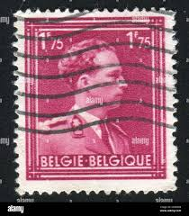 |
| eBay | BELGIUM 357 - King Leopold III "Victory" Deep Violet (pa54629) | eBay | 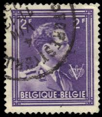 |
| eBay | 1936 Belgium SC#289: 2f King Leopold III. used 🔥 -10% surcharge 🔥VF | eBay | 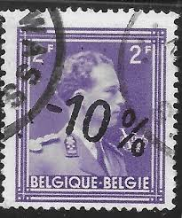 |
| eBay | 1953-66 King Baudouin. Belgium. | eBay | 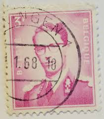 |
| Dreamstime.com | BELGIUM - CIRCA 1958: a Stamp Printed in Belgium Shows King Baudouin, `Marchant` Type, Circa 1958. Editorial Photography - Image of belgien, baudouin: 155837827 | |
| eBay | 1936 Belgium SC#286: 1.50f King Leopold III. used 🔥 -10% surcharge 🔥VF | eBay | |
| eBay | Red Used Belgian & Colonies Stamps for sale | eBay | |
| Photo by Pul koleksiyonu (@koleksiyonpullar) · 2 September 2020 | ||
| Old-Stamps.com | King Leopold III - Belgie - Belgique / 1963 | |
| Alamy | Postage stamp from Belgium in the King Leopold III series issued in 1943 Stock Photo - Alamy | |
| Dreamstime.com | Old stamps of Belgium editorial image. Image of mail - 82710715 | |
| Alamy | King baudouin of belgium hi-res stock photography and images - Alamy | |
| Shutterstock | 762 Baudouin De Bélgica Royalty-Free Images, Stock Photos & Pictures | Shutterstock | |
| HipStamp | 288 King Leopold III | Europe - Belgium & Colonies, General Issue Stamp / HipStamp | |
| 1953 Belgium King Baudouin 3 F., unique UV(question) : r/philately |